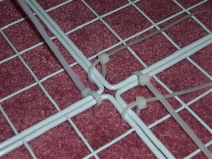

There are many different bunny cages on the market. Some are roomy with solid bottoms; others are tight with wire bottoms that can injure a rabbit's foot. Mopsy* prefers a high quality multi-level condo, like the ones made by Leith Petwerks, or a lovingly crafted home-built condo, which he'll show you how to make now.
* Sadly, Mopsy is no longer with us, but his spirit, enthusiasm, and sound building advice live on.
Lay out the wall on the floor, making sure that the grid portions of all of them are the same side up. Secure with cable ties. Don't pull the cable ties fully tight just yet; leave a slight give to them (see photo below). You will tighten them later. Repeat to make the second wall.
Although Mopsy has no difficulty consuming a good novel—or lamp cord for that matter—like most rabbits, he has no interest in cable ties. To be safe, you can put a cable tie onto your rabbit's current dwelling place as a test. If it turns out to be scrumptious, try switching colors (try black) or use another kind of fastener.

Secure the grids together with cable ties as in step #1. Repeat to make the second side wall.
After you use the cable ties to connect the four walls together at each square grid, you will find that you can manipulate the cage to be various shapes, e.g. triangle, pentagon, etc. Decide on the shape that you want at this time. Mopsy chose a rectangle.
Slip two dowels through the grids along the length of the cage. The dowels will prevent the bun's shelves from falling through. Where you put them depends on the shelf layout and door location. Mopsy contemplated a larger lower level and high door, but ended up settling on the layout shown in step 9.
Place the plywood on top of the dowels. Bunny is optional at this stage.
Mopsy likes to hop between levels in the condo but doesn't care to go up, over a wall, and then back down all in one jump. Since your rabbit is likely similar, your condo won't need a top if you plan your floor and wall heights with surrounding furniture in mind.
You're almost done. If you want, take a moment to relax with a snack. Mopsy recommends the handle of a wicker basket.
Use the small spring to clasp the door shut. It's okay. Mopsy and Julius get along.
For better traction, Mopsy likes cushioned-surface solid non-adhesive shelf liner. His paws like the softness, and the room-service crew likes the water resistance. Carpet works, too, but only on levels that tend to stay clean.
Congratulations! You will have a happy rabbit in a spacious, homemade condo for under $60! Remember to give your bunny plenty of exercise outside his cage in a rabbit-proof room. Mopsy says he loves to do binkies (happy jumps) in the living room.
If your rabbit's appetite is on the messy side like Mopsy's, you may want to consider a hay tray designed to keep your rabbit (and his droppings) in the rabbit zone and the hay in the hay zone. Place a small litter pan inside a high-walled plastic container. In the remaining space, place inch-thick boards with protruding bolts (about 6 inches long and ¼ inch or more in diameter, spaced every 3 to 4 inches). The bolts won't hurt a rabbit, but they aren't comfortable, either, so the hay can go on the boards while the rabbit stays in the litter pan.
Fill the litter pan about an inch deep with an absorbent material such as hardwood fuel pellets. Mopsy sits right on the pellets while he eats. When the litter pan gets soiled, empty it into a compost bin and refill with new hardwood fuel pellets. You'll have a tidy condo and a tidy bun.
Mopsy's residence was first located in a room with a wood floor, which meant that the condo didn't need its own floor, just a covering like one suggested in step 9. Relocation to a carpeted room, however, quickly led to hay-cleaning realities that called for a more self-contained solution.
If your condo needs its own floor, one option is to buy a large tray, such as the Petco 800 Series Dog Crate Replacement Tray. If you want wheels or an exact size, another option is to make your own floor: Cut a piece of plywood to the shape of your condo and nail baseboard molding around the edges. This forms a large tray for the storage cubes to rest within. To ease cleaning behind the condo, screw caster wheels to the bottom of the plywood—also good for bunny rides.